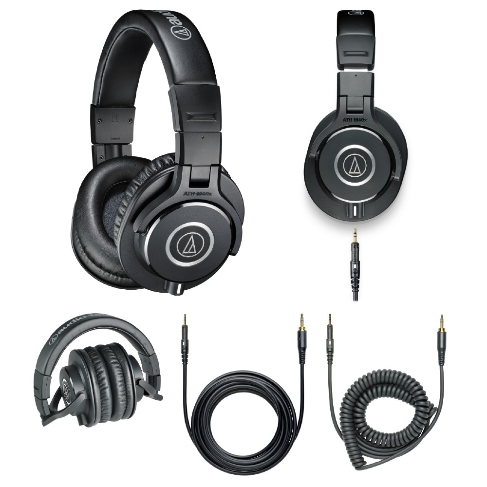

Usłysz każdy detal w dowolnym środowisku

Z radością prezentujemy słuchawki nauszne zamknięte Japońskiego producenta Audio-Technica ATH-M40x. Przetworniki o liniowym profilu, wymieny przewód (dwa w zestawie: spiralny 1.2m i prosty 3m), szeroki zakres częstotliwości, wysoka czułość, niska waga, ergonimiczna opaska i pady dopasowujące się do ucha - jednym słowem najlepsze monitory w tym przedziale cenowym, które wspaniale sprawdzą się zarówno w trakcie domowych sesji, jak i w głośnym środowisku zewnętrznym.
Cena: 399 PLN
Najważniejsze cechy:
- Liniowe przetworniki wysokiej jakości
- Dwa wymienne przewody
- Miękke pady zapewniające komfort i izolację
| Parametr | Wartość |
|---|---|
| Pasmo przenoszenia | 15 - 24 000 Hz |
| Czułość | 96 dB |
| Impedancja | 35 Ohm |
| Waga | 240 g |
| Długość przewodu | 1.2 m / 3.0 m |
Zapraszamy do kontaktu w sprawie niniejszego produktu.
Zapytaj o produkt